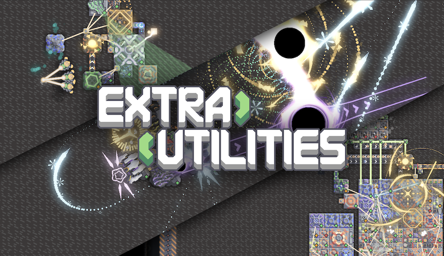

ExtraUtilities
Mindustry 扩展模组 · 官方文档库
新手辅助，高阶单位，高阶炮塔，高阶工厂，视觉调整 | 轻量化高兼容模组
模组介绍
ExtraUtilities 给予原版游戏上的体验扩展：
- 高级单位工厂炮塔
- 全新战役地图玩法
- 辅助设置优化游戏体验
- 神秘机制以及作者的小巧思
本文档收录全部建筑、物品、单位数值和具体机制。
全分类导航

文档维护
- 开源仓库：→ 前往仓库 ←
- 数值错误、缺失内容欢迎提交 Issues 补充修正
新手辅助，高阶单位，高阶炮塔，高阶工厂，视觉调整 | 轻量化高兼容模组
本文档收录全部建筑、物品、单位数值和具体机制。
